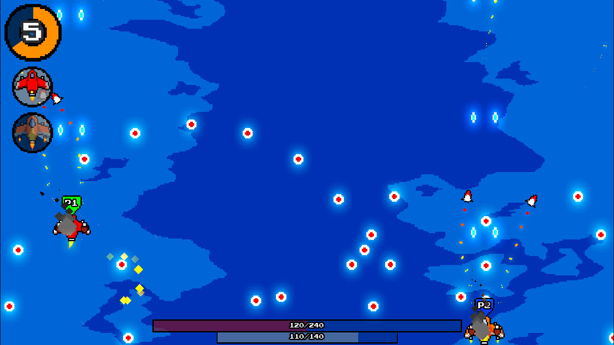

Review Proxima

Proxima merupakan video game yang bergenre scrolling shooter, genre game sangat populer pada tahun 80 hingga awal 2000-an sebut saja seris game airstrike. namun sayangnya genre game ini lama kelamaan sudah mulai kehiangan popularitasnya. Namun Cubebig Studio sebagai pengembang game ini berhasil memberikan suasana yang baru pada game ini.
Meskipun membawa genre game yang sudah ketinggalan jaman namun Cubebig Studio berhasil mengemas game ini dengan nuansa moderen dengan menggabungkannya dengan genre roguelike yang cukup popoler beberapa tahun belakangan ini.


Fitur
Meskipun mengusung genre yang sudah lama ditinggalkan namun game ini masih bisa memberikan kita beragam fitur yang unik dan bahkan jarang kita temui di game lain diantaranya.
1. Co-Op multiplayer
Game ini menghadirkan fitur Co-Op multiplayer, namun Co-Op multiplayer di game ini tidak seperti Co-Op multiplayer pada umumnya di game jaman sekarang dimana Co-Op multiplayer di game ini bisa kalian mainkan dengan teman kalian hanya dengan menggunakan. satu device.

2. Pesawat Dengan Kemampuan Spesial Masing Masing
Terdapat 2 Pesawat yang bisa kita gunakan di game ini dan setiap pesawan memiliki kemampuan spesial masing masing yang membuat player bisa memiliki playstyle yang berbeda untuk setiap pesawatnya.
Selain dari itu jika kita bermain dengan teman kita dalam mode Co-Op kita juga bisa pesawat yang kita juga dapat menggunakan kemampuan spesial dari pesawat yang teman kita gunakan sehingga membuat permainnan menjadi semakin seru jika dimainkan bersama dengan teman kita.
3. PowerUp yang Unik
Untuk PowerUp-nya sendiri bisa kita bisa kita dapatkan setiap kali kita naik level dan untuk bisa menaikan level kita harus mengumpulkan exp yang bisa kita dapatkan dari mengalahkan musuh. dan nantinya jika exp-nya sudah mencapai batas tertentu maka kita bisa memilih PowerUp dengan cara spin seperti pada game yang ada di kasino.
PowerUp yang bisa kita dapatkan sendiri terbilang cukup unik mulai dari powerup yang bisa meningkatkan healtbar kita atau shieldbar kita atau powerup yang bisa melengkapi kita dengan senjata tambahan seperti roket dan meriam.

Gameplay
Untuk gameplay sendiri game ini sama seperti game bergenre scrolling shooter pada umumnya dimana kita akan mengendalikan sebuah pesawat luar angkasa dan melawan semua musuh yang berdatangan. Hanya saja di game ini pesawa luar angkasa kita diberikan kemampuan spesial yang membuat permainan semakin asik apalagi jika kita bermain bersama dengan teman.
Uniknya digame ini jika kita bermain bersama teman kita maka healt-bar kita dengan teman kita menjadi satu dengan healt point yang lebih banyak dibandingkan dengan jika kita bermain sendiri. Hal tersebut membuat jika salah satu dari kalian terkena demage dari musuh maka teman kalian juga akan merasakan dampak tersebut.
Begitu juga dengan kemampuan unik dari setiap pesawat kalian bisa nggunakan kemampuan unik dari pesawat teman kalian sehingga kalian bisa mengkombinasikan kemampuan unik dari kedua pesawat yang kalian gunakan untuk mempermudah permainan
Selain itu digame ini juga terdapat 2 Stage dengan 5 level masing masing stagenya, yang dimana setiap akhir stage kita akan melawa Bos. Untuk bosnya sendiri memiliki pola serangan yang masing sehingga membuat kita harus menghafal setiap pola serangannya untuk bisa mengalahkan bos tersebut.
Setiap Stage di game ini juga memiliki musuh yang berbeda dengan pola serangan yang berbeda sengingga membuat kita harus beradaptasi lagi saat berada di stage yang baru karna mereka memiliki pola serangan yang berdada dari yang sebelumnya.
Kekurangan
Sebagai game yang masih dalam tahap pengembang saya tidak bisa memberikan banyak komentar karna versi yang saya mainkan hanyalah versi demo. namun ada beberapa kekurangan yang saya temukan di versi demo ini yang saya harap bisa di perbaiki di full versionnya nanti.
1. Pilihan Pesawat Yang Sedikit
Di game ini hanya menyediakan 2 pilihan pesawat yang menurut saya terlalu sedikit. apalagi gamenya akan sangat cocok jika dimainkan bersama teman, dan kita bisa mencoba mengkombinasikan berbagai kemampuan spesial dari beragam pesawat.
2. PowerUp yang sedikit
Untuk powerup yang diberikan hanya 4 jenis yaitu manambah max-hp, manambah max-shield, bisa mengeluarkan rocket, dan juga mendapatkan tambahan meriam untuk menembak. dengan ke empat powerup tersebut sebenarnya game sudah cukup menyenangkan namun akan lebih seru lagi jika pilihan powerup lebih banyak.
Kesimpulan
Untuk sebuah game yang masih di versi demo ini sudah sangat seru untuk dimainkan, Namun untuk bisa merasakan keseruan yang maksimal sangat disarankan untuk memainkan ini berdua bersama teman kalian, kalian karna game ini sangat mengandalkan kerja sama.